I build projects that clarify systems, stories, and user needs.
My project work includes web design, UX concept development, visual storytelling, branding, and systems-focused coursework. I use each project to practice turning ambiguous ideas into clearer, more usable experiences.
Emissary Law Group
I helped create a law firm create brand identity focused on clarity, trust, and direct communication. This project connects my marketing and visual communication background to service-based user experience.
- Brand identity
- Website design
- Copywriting
- Client-centered messaging

CeraVe App Prototype
I designed a skincare app concept focused on product discovery, routine-building, and helping users make decisions with less friction. This project reflects my interest in health, accessibility, and digital tools that support real-world needs.
- UX concept development
- Mobile app prototyping
- Health-focused user flows
- Accessible content structure
Dog-Park People
I created a comic piece for The New Yorker that explores the absurdity of dog parks through observational storytelling. This project highlights my skills in visual communication, humor writing, and audience engagement.
- Published illustration
- Humor writing
- Visual storytelling
- Audience awareness
Personal Website
I built and maintain my personal website as a home for my creative, strategic, and professional identity.
- Personal branding
- Visual identity